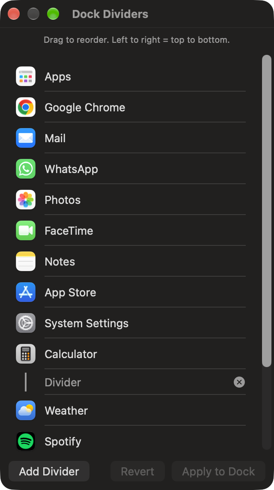

Dock Dividers, Mac Dock'undaki uygulamaların arasına macOS'un kendi ayracı gibi görünen ince çizgiler koyar. Kod araçlarını, mesajlaşmayı, müziği ayrı gruplarda tut.
Ücretsiz ve açık kaynak · macOS 13+ · Apple Silicon ve Intel · 470 KB
Genel · Kod · Müzik
macOS sadece uygulamalarla Çöp arasına ayraç koyar. Dock Dividers istediğin kadar ayracı istediğin iki uygulamanın arasına koyar.
Çizgiler macOS'un kendi ayracıyla aynı incelikte. Açık ve koyu temaya göre rengi değişir, tıklamaları engellemez.
Tüm Dock tek bir listede. Ayracı ya da uygulamayı sürükle, Dock'a Uygula'ya bas.

curl -fsSL https://dock-dividers.armanalis.workers.dev/install.sh | sh
Komut sadece uygulamayı indirip Uygulamalar klasörüne koyar; ne yaptığını buradan okuyabilirsin. Çizgilerin her zaman görünmesi için Ayarlar'da Girişte Başlat'ı aç. Dock büyütmesi açıksa çizgiler biraz geriden gelir; en temiz görünüm için büyütmeyi kapat.